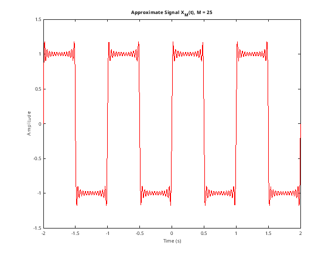
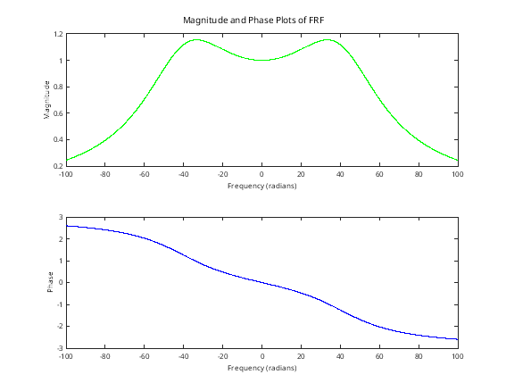
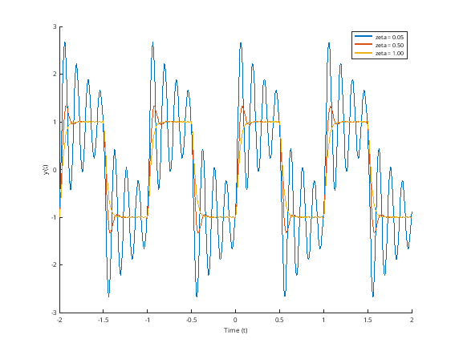

Contents
clear all;
Part a: Plot approximate signal
figure(1) M = 25; w_0 = 2 .* pi; k = -M:M; t = linspace(-2, 2, 1000); a_k = @(k) (1 ./ (1j .* pi .* k)) .* (1 - (-1).^k); aK = arrayfun(a_k, k); aK(ceil(length(aK)/2)) = 0; E = exp(1j * w_0 * (k.'* t)); x_t = real(aK * E); plot(t, x_t, 'r', 'LineWidth',2); xlabel("Time (s)"); ylabel("Amplitude"); title("Approximate Signal X_{M}(t), M = 25");
Part b: Plot magnitude and phase of FRF
figure(2) w_n = 15 .* pi; alpha = (w_n).^2; zeta = 0.5; h = @(w) alpha ./ (-w.^2 + 2 .* 1j .* zeta .* w_n .* w + w_n .^2); W = linspace(-100, 100, 5000); H = arrayfun(h, W); subplot(2,1,1); plot(W, abs(H), 'g', 'LineWidth', 2); ylabel('Magnitude'); xlabel('Frequency (radians)') subplot(2,1,2); plot(W, angle(H), 'b', 'LineWidth', 2); ylabel('Phase'); xlabel('Frequency (radians)'); sgtitle('Magnitude and Phase Plots of FRF');
Part c: Evaluate and plot y(t) using the FRF method and x(t) from (a)
y(t) = a_k H(jkw_0) e^(jkw_0t)
wk = k * w_0; zetas = [0.05 0.5 1]; Hjw = @(w, z) alpha ./ (w_n^2 - w.^2 + 1j*2*z*w_n.*w); figure(3) hold on for i = 1:3 z = zetas(i); Hk = Hjw(wk, z); bk = Hk .* aK; y_t = real(bk * E); plot(t, y_t, 'LineWidth', 2.5, 'DisplayName', sprintf('zeta = %.2f', z)); end xlabel("Time (t)") ylabel("y(t)") legend()